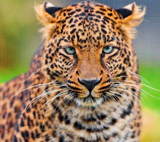

leopar
Pars; aslan, kaplan ve jaguardan sonra en büyük cüsseye sahip dördüncü büyük kedi türüdür. Erkek parsın boyu yaşadığı bölgeye değişmekle birlikte ortalama 90 santimetre olan kuyruk dahil 2,40 metreye kadar olabilir. Ağırlığı 90 kiloya erişebilir. Erkekler dişilerden %20-%40 kadar daha büyük olabilir. Diğer büyük kedilere göre uzun gövdesine göre daha kısa bacaklara sahiptir. Büyük kedilerin içinde en iyi ağaca tırmanabilen türdür. Geniş pençelerinde sivri ve keskin tırnakları, kısa ve toparlak kulakları, göz alıcı parlaklıkta kısa tüylü postu vardır. Post rengi ve tüy uzunluğu yaşam alanına göre değişmekle beraber, parlak sarımsı kahverengiden koyu sarımsı pas rengine kadar farklılık gösterebilir. Üstünde siyah benekler bulunur.
Birçok kişi parsı jaguar ile karıştırır. Jaguardan farklı olarak beneklerinin içlerinde siyahlık bulunmaz. Çene ve kafa yapıları da jaguara göre daha küçüktür. Boğazlarının altında siyah noktalardan oluşan kolye benzeri çizgi vardır. Alt kısımları beyazdır. Gövdesinin üçte ikisi kadar da kuyrukları vardır. Postlarının üstündeki siyah benekleri, yapraklar arasında daha kolay kamufle olarak sezdirmeden avına yaklaşmasını sağlar. Postunun üstündeki benekler, insanların parmak izi gibi her bireyde farklılık gösterir. Parslarda melanistik siyah renkli olanlara da rastlanır. Siyah renkli olanlarına panter denildiği de olur. Bilim adamları önceleri siyah renkli parsları farklı bir tür olarak tanımlamalarına rağmen, sonradan farklı bir tür olmadığına karar vermişlerdir. Siyah renkli parsların postlarına bakıldığında belirsiz de olsa benekler görülebilir. Kardeş yavrulardan biri normal renkte olurken diğeri siyah olabilir. Çekingen ve ihtiyatlıdır. Duyuları çok kuvvetlidir. Bu özelliklerinin yanında avladıkları avları bazen sırtlan sürülerine kaptırırlar.